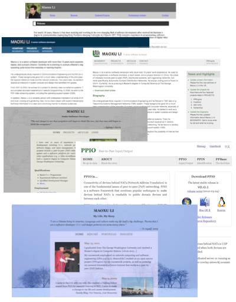

As a software developer, it is not a challenge to make some static web pages with HTML/CSS and JavaScript. I also customized some WordPress themes to match the style of my personal web pages. WordPress is a well-designed software with easy-to-use API. Only a little bit skills of PHP and HTML/CSS is needed to customize a WordPress theme, even make a new one. I had revised some WordPress themes so deeply that they look like absolutely new ones. But I am too lazy to parameterize every customized fields in the theme to produce a qualified WordPress theme. Who knows, maybe I will do it some time and share a theme I made in WordPress community. My personal websties: http://www.maoxuli.com.
Personal web and wordpress theme

Technical Summary
| Languages: | PHP, HTML/CSS, JavaScript |
|---|---|
| Software Framework: | WordPress 2/3 |
| Web Browsers: | IE 6/7/8/9, Safari 4/5, Google Chrome, FireFox |